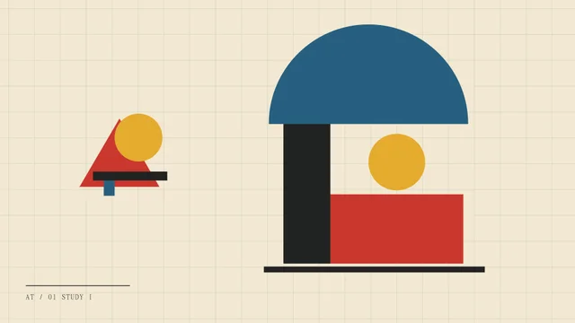
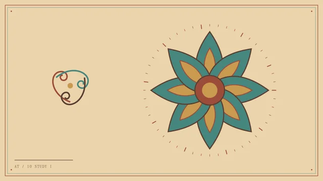
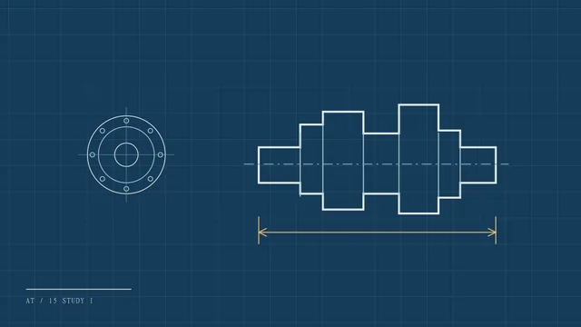

跳到内容
A
ARTISAN
风格目录
素材检索
风格对照
藏品版次 V2 / 16
ART & DESIGN MATERIAL ARCHIVE
ARTISAN
.
通用艺术设计材质库
浏览素材
↗

01 构成练习

10 层莲藻井

15 传动轴图板
01 / STYLE DIRECTORY
风格目录
02 / MATERIAL INDEX
素材检索
导出风格清单 ↓
关键词
风格
类别
子系列
格式
尺寸
授权
透明
显示
每个作品一个版本
全部文件及保留版本
收藏
全部
仅收藏
清除筛选
导出筛选结果 ↓
已选 0 项
选择本页
清空选择
导出所选清单 ↓
上一页
下一页
03 / COMPARATIVE PLATES
风格对照
全套风格速查
编号 / 风格
核心图形
适合用途
色板
×
棋盘
浅底
深底
−
100%
＋
复制相对路径
复制素材链接
收藏此作品
打开原文件 ↗
所在目录 ↗